[Java] 58. EclipseでSpring bootのJPAを設定する方法
こんにちは。明月です。
この投稿はEclipseでSpring bootのJPAを設定する方法に関する説明です。
Spring Web Framework環境でJPAを設定する方法に関して説明したことがあります。
リンク - [Java] 45. JPAを設定する方法
基本的の設定はSpring Web Framework環境で設定することと同じです。差異があればSpring Web Framework는 persistence.xmlで接続環境を設定してSpring bootはapplication.propertiesで設定することになります。
Spring bootは環境設定ファイルが一つに統合することになるので管理しやすいですね。
まず、JPAを連結するためにローカルデータベースにテストテーブルを作成しましょう。
-- testデータベースに接続
use test;
-- 以前のテーブルが有れば削除
-- drop table info;
-- drop table user;
-- userテーブル生成
create table user(
id varchar(255) not null,
name nvarchar(255) not null,
primary key(id) -- キー設定
);
-- infoテーブル生成
create table info(
idx int not null auto_increment, -- 自動増加
id varchar(255) not null,
age int not null,
primary key(idx), -- キー設定
foreign key(id) references user(id) -- idはuserのidで連結
);
そしてテーブルにテストデータを格納します。
-- userテーブルにデータを挿入
insert into user (id, name) values('nowonbun', 'Hello');
-- infoテーブルにデータを挿入
insert into info(id, age) values('nowonbun', 20);
これから上のデータをSpring bootを利用して画面に表示しましょう。
一応、以前の投稿で作成したプロジェクトでJPAを追加しましょう。
リンク - [Java] 57. EclipseでSpring bootを設定する方法
まず、ウィザードを実行してJPAライブラリを追加しましょう。
プロジェクトでマウス右クリックしてSpring의 Add Starterを実行しましょう。
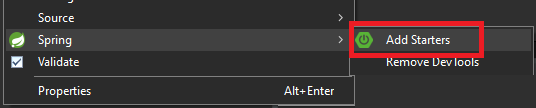
そしてこれがeclipseのバグかどうか知らないですが、既存に選択したものが選択されていません。それで選択せずにFinishを押下すると既存に設定したライブラリが解除する状況になります。
なので、以前に設定したものもチェックしなければならないです。(バグらしい。。。)
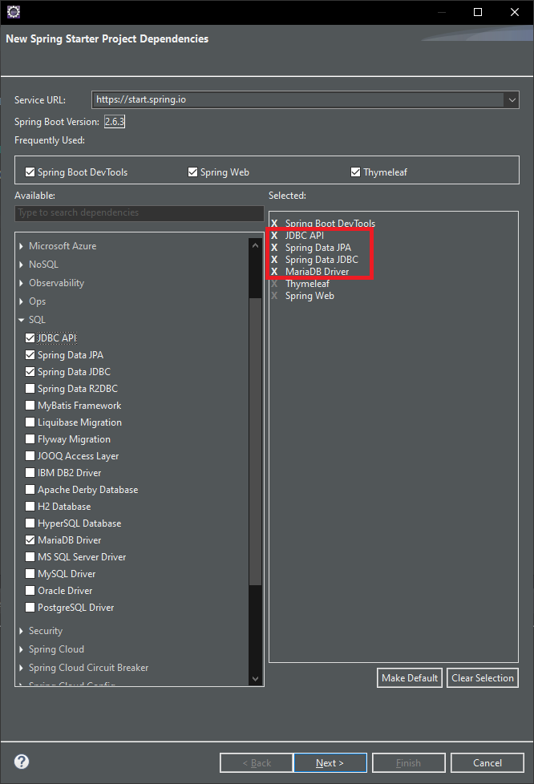
JPAを使うためにはJDBC API、Spring Data JDBC、Spring Data JPA、MariaDB Driverを追加しなければならないです。
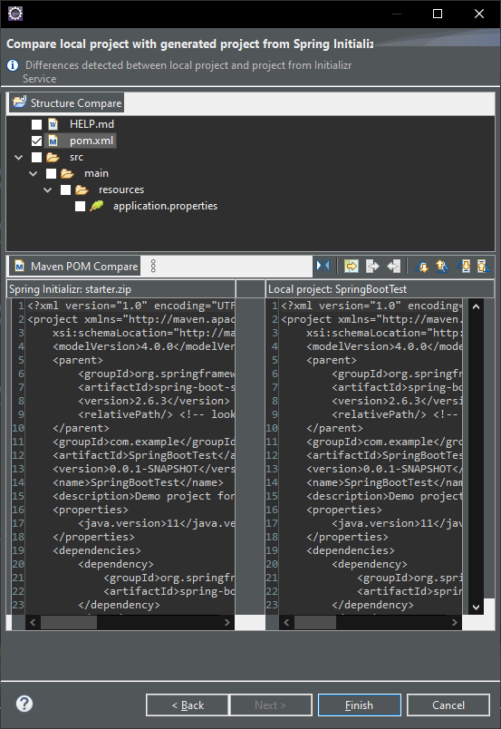
Nextボタンを押下するとソース比較画面が表示します。ここでpom.xmlだけ更新することをチェックしてFinishボタンを押下するとmavenアップデートします。
<?xml version="1.0" encoding="UTF-8"?>
<project xmlns="http://maven.apache.org/POM/4.0.0" xmlns:xsi="http://www.w3.org/2001/XMLSchema-instance"
xsi:schemaLocation="http://maven.apache.org/POM/4.0.0 https://maven.apache.org/xsd/maven-4.0.0.xsd">
<modelVersion>4.0.0</modelVersion>
<parent>
<groupId>org.springframework.boot</groupId>
<artifactId>spring-boot-starter-parent</artifactId>
<version>2.6.3</version>
<relativePath/> <!-- lookup parent from repository -->
</parent>
<groupId>com.example</groupId>
<artifactId>SpringBootTest</artifactId>
<version>0.0.1-SNAPSHOT</version>
<name>SpringBootTest</name>
<description>Demo project for Spring Boot</description>
<properties>
<java.version>11</java.version>
</properties>
<dependencies>
<!-- thymeleafライブラリ -->
<dependency>
<groupId>org.springframework.boot</groupId>
<artifactId>spring-boot-starter-thymeleaf</artifactId>
</dependency>
<!-- Spring bootライブラリ -->
<dependency>
<groupId>org.springframework.boot</groupId>
<artifactId>spring-boot-starter-web</artifactId>
</dependency>
<!-- JUnitライブラリ -->
<dependency>
<groupId>org.springframework.boot</groupId>
<artifactId>spring-boot-starter-test</artifactId>
<scope>test</scope>
</dependency>
<!-- devtoolsライブラリ -->
<dependency>
<groupId>org.springframework.boot</groupId>
<artifactId>spring-boot-devtools</artifactId>
<scope>runtime</scope>
<optional>true</optional>
</dependency>
<!-- data-jdbcライブラリ -->
<dependency>
<groupId>org.springframework.boot</groupId>
<artifactId>spring-boot-starter-data-jdbc</artifactId>
</dependency>
<!-- data-jpaライブラリ -->
<dependency>
<groupId>org.springframework.boot</groupId>
<artifactId>spring-boot-starter-data-jpa</artifactId>
</dependency>
<!-- jdbcライブラリ -->
<dependency>
<groupId>org.springframework.boot</groupId>
<artifactId>spring-boot-starter-jdbc</artifactId>
</dependency>
<!-- mariadb-java-clientライブラリ -->
<dependency>
<groupId>org.mariadb.jdbc</groupId>
<artifactId>mariadb-java-client</artifactId>
<scope>runtime</scope>
</dependency>
</dependencies>
<build>
<plugins>
<plugin>
<groupId>org.springframework.boot</groupId>
<artifactId>spring-boot-maven-plugin</artifactId>
</plugin>
</plugins>
</build>
</project>
ウィザードを使わなくてpom.xmlを直接に修正する方法もあります。実はウィザードを使うことより直接に環境設定するほうが正確なので、直接にpom.xmlを設定する方法をお勧めです。
そしてEclipseでJPAを使わなければならないので、JPAモードに変更しなければならないです。
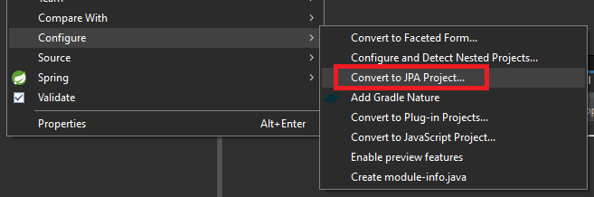
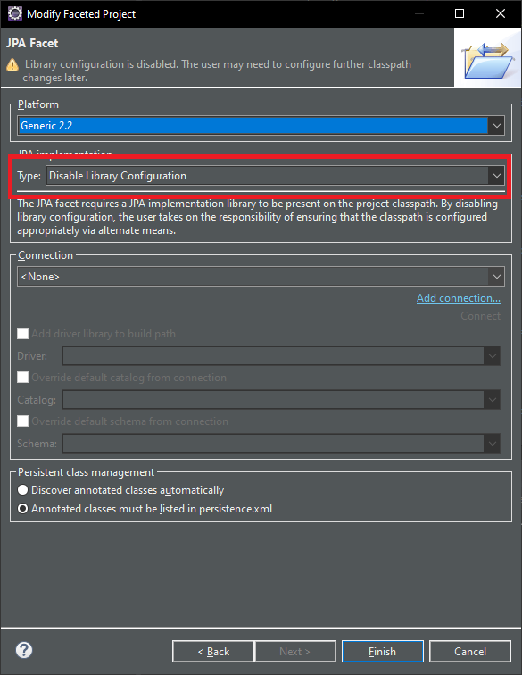
eclipseはSpring boot基準ではなく、Web framework基準で設定されています。なのでeclipse設定を少し変わらなければならないです。
まず、ソースの中でMETA-INF/persistence.xmlファイルを消しましょう。
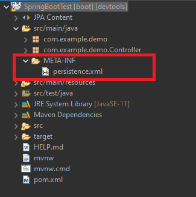
そうするとeclipseでMETA-INF/persistence.xmlファイルがないということにエラー表示されます。
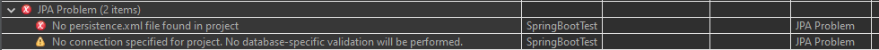
Window -> PreferencesタブでJava Persistence -> JPA -> Errors/WarningsのProject -> No persistence.xml file found in projectをignoreに変更します。
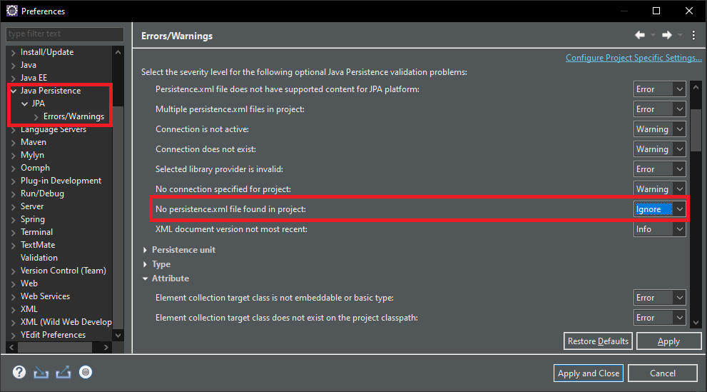
エラーメッセージが無くなりました。
そしてこれからデータベースからEntityを作成しましょう。プロジェクトでマウス右クリックします。
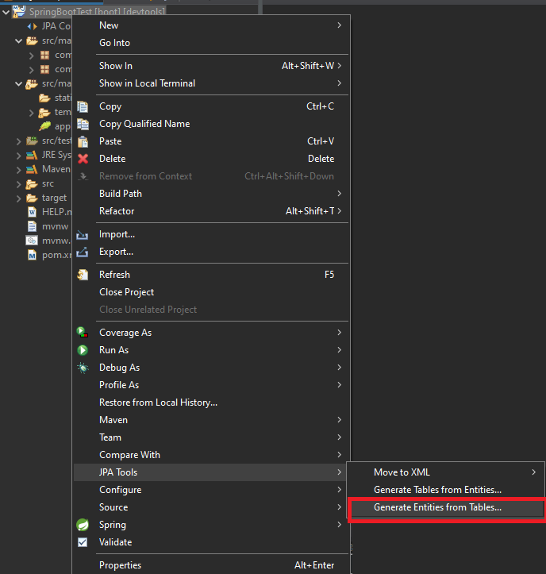
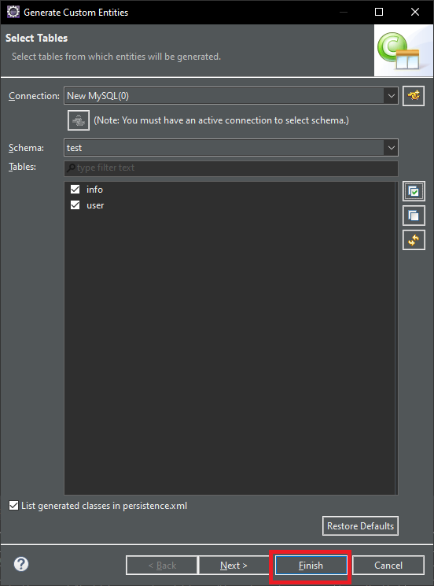
クラスを生成するとmodel.entityクラスが作成されることを確認できます。
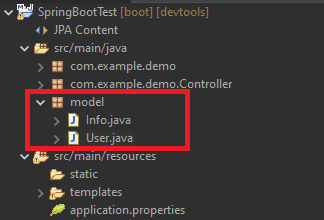
これをSpringBootTestApplicationクラスの下位パッケージに移動します。以前のController見たいにscanBasePackagesを合わせなかったらエラーが発生します。やはりscanBasePackagesを設定すると別のパッケージに設定することができます。
これからapplication.propertiesで接続情報を設定しましょう。
# サーバーポート設定
server.port=8081
# thymeleaf ファイル設定
spring.thymeleaf.prefix=classpath:templates/
spring.thymeleaf.check-template-location=true
# thymeleaf ファイル拡張子
spring.thymeleaf.suffix=.html
spring.thymeleaf.mode=HTML5
# thymeleaf キャッシュモード
spring.thymeleaf.cache=false
# データベース接続情報
spring.datasource.url=jdbc:mysql://localhost:3306/test?useSSL=false&useUnicode=true&characterEncoding=utf8&serverTimezone=Asia/Seoul
# ID
spring.datasource.username=root
# パスワード
spring.datasource.password=****
# ドライブクラス
spring.datasource.driver-class-name=org.mariadb.jdbc.Driver
# クエリログ表示可否
spring.jpa.show-sql=true
# コンソール表示可否
spring.h2.console.enabled=true
データベース接続を設定したらレポジトリインターフェースを生成して画面に出力しましょう。
package com.example.demo.repository;
import org.springframework.data.jpa.repository.JpaRepository;
import com.example.demo.model.User;
// インターフェース
public interface UserRepository extends JpaRepository<User, String> {}
Spring bootにはtransactionを設定しなくてもRepositoryを通ってデータを取得することができます。
レポジトリインターフェースを生成すると、既存のControllerのHomeControllerに依存性追加(@Autowired)をします。
package com.example.demo.Controller;
import org.springframework.beans.factory.annotation.Autowired;
import org.springframework.stereotype.Controller;
import org.springframework.ui.Model;
import org.springframework.web.bind.annotation.RequestMapping;
import com.example.demo.repository.UserRepository;
// コントローラーアノテーション
@Controller
public class HomeController {
// レポジトリ依存性注入
@Autowired
private UserRepository userRepository;
// マッピングアドレス
@RequestMapping(value = { "/", "/index.html" })
public String index(Model model) {
// レポジトリからidを通ってUserデータを取得する。
var user = userRepository.findById("nowonbun").get();
// テンプレートに渡すデータ
model.addAttribute("data", user.getName());
// テンプレートファイル名
return "Home/index";
}
}
rootページが呼び出したらuserRepositoryからnowonbunのキーでデータを取得することができます。そしてThymeleafテンプレートにnameデータを表示します。
下記みたいなプロジェクト構造になりますね。
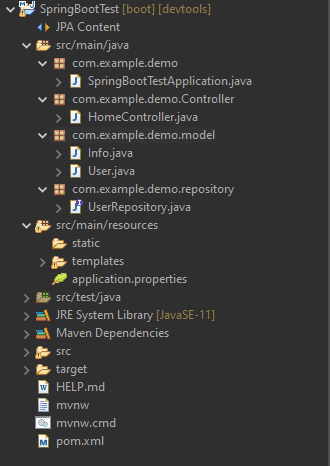
それならプロジェクトを実行すると下記みたいに結果が表示されます。
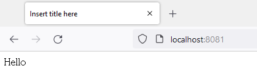
userテーブルのnowonbunのレコードのname値がHelloなので正常にデータベースからデータを取得して出力した結果です。
設定方法が違うことだけで、Entityを扱う方法は以前のWeb frameworkと同じです。
リンク - [Java] 46. JPAのEntityクラスの基本設定(@GeneratedValue、 @ManyToMany)
リンク - [Java] 47. JPAのEntityクラスのリファレンス設定(cascade, fetch)
既存のWeb Frameworkには私がDaoを生成してFactoryDaoを利用してトランザクションを管理しました。
Spring bootにはRepositoryインターフェースを作成して依存性注入されたインスタンスで自動にトランザクションを管理しますね。実は自動という表現しますが、これがcommit rollbackをどのように管理しなければならないかエラーが発生する時にどのようにrollbackをしなければならないかに関して不明確です。
それでSpring bootにもEntityManagerを取得してトランザクションを直接に管理する方法があります。次の投稿ではSpring bootでDaoとFactory、実際的にトランザクション管理する方法に関して説明します。
ここまでEclipseでSpring bootのJPAを設定する方法に関する説明でした。
ご不明なところや間違いところがあればコメントしてください。
- [Java] 63. Spring bootでcronスケジューラとComponentアノテーション2022/03/16 18:57:30
- [Java] 62. Spring bootでWeb-Filterを設定する方法(Spring Security)2022/03/15 22:16:37
- [Java] 61. Spring bootでRedisデータベースを利用してセッションクラスタリング設定する方法2022/03/01 18:20:52
- [Java] 60. Spring bootでApacheの連結とロードバランシングを設定する方法2022/02/28 18:45:48
- [Java] 59. Spring bootのJPAでEntityManagerを使い方2022/02/25 18:27:48
- [Java] 58. EclipseでSpring bootのJPAを設定する方法2022/02/23 18:11:10
- [Java] 57. EclipseでSpring bootを設定する方法2022/02/22 19:04:49
- [Java] 56. Web serviceのサーブレット(Servlet)で初期化作業(properties設定)2021/07/02 17:10:36
- [Java] 55. Spring frameworkに文字化けを解決する方法(Encoding設定)2021/06/30 16:37:16
- [Java] 54. Spring frameworkでWeb filterを使う方法2021/06/29 18:25:12
- [Java] 53. ウェブサービス(Web service)でエラーページを処理する方法2021/06/25 13:35:54
- [Java] 52. SpringフレームワークでDAOをFactory method Patternを利用して依存性注入する方法2019/10/17 07:15:48
- [Java] 51. SpringフレームワークでJPAを使い方(依存性注入@Autowired)2019/10/16 07:32:55
- [Java] 63. Spring bootでcronスケジューラとComponentアノテーション2022/03/16 18:57:30
- [Java] 62. Spring bootでWeb-Filterを設定する方法(Spring Security)2022/03/15 22:16:37
- [Java] JWT(Json Web Token)を発行、確認する方法2022/03/14 19:12:58
- [Java] 61. Spring bootでRedisデータベースを利用してセッションクラスタリング設定する方法2022/03/01 18:20:52
- [Java] 60. Spring bootでApacheの連結とロードバランシングを設定する方法2022/02/28 18:45:48
- [Java] 59. Spring bootのJPAでEntityManagerを使い方2022/02/25 18:27:48
- [Java] 58. EclipseでSpring bootのJPAを設定する方法2022/02/23 18:11:10
- [Java] 57. EclipseでSpring bootを設定する方法2022/02/22 19:04:49
- [Python] Redisデータベースに接続して使い方2022/02/21 18:23:49
- [Java] Redisデータベースを接続して使い方(Jedisライブラリ)2022/02/16 18:13:17
- [C#] Redisのデータベースを接続して使い方2022/02/15 18:46:09
- [CentOS] Redisデータベースをインストールする方法とコマンドを使い方2022/02/14 18:33:07
- [Design pattern] 3-6. ステートパターン(State pattern)2021/11/17 20:04:47
- [Design pattern] 3-5. メメントパターン(Memento pattern)2021/11/16 20:01:36
- [Design pattern] 3-4. イテレータパターン(Iterator pattern)2021/11/15 19:31:28